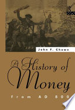
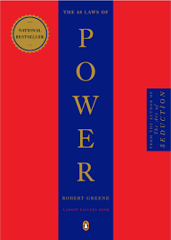

|
Very interesting book.
Learned a lot about linguistics and voice science.
|

|
Realistic fiction centered on a Pakistani-American Muslim girl is
a refreshing change in the middle grade market.....It’s solid storyline
and the common denominator of middle school drama highlights the fact
that students from all backgrounds may be more alike than they realize.
|
|

|
This book helps us understand the current economic situation,
and the true extent of the economic crisis today.
|

|
I was surprised to read the accounts of Dr. Ben Carson.
His mother had a strong stamina in raising her two boys with such a positive attitude.
She is my all time mentor. With hard work, and
complete trust in God we all can accomplish what God has planned for us in our lives.
She is a true example of an incredible faith. Dr. Carson is a one on a kind, as he was
so honest is sharing his story, He is the unspoken hero that took many years of hard
work to develop his talents, yet our God gave him and his wife a marriage union that
held them though all circumstances., One thing I will take with me from this book is
the power that God gives us with total faith in Him. My thanks Dr. Carson for a truly
wonderful book that was well worth reading.
|
|

|
Life changing book. You should have read this yesterday.
A great book for any individual looking to learn and understand
human behavior.
|

|
The WISDOM is in this book.
|